Faites de votre alimentation votre alliée santé !
 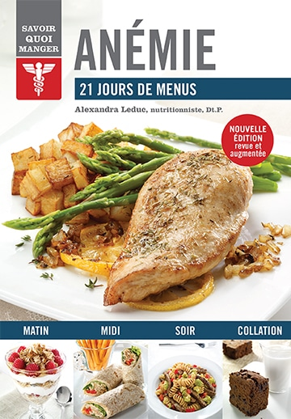
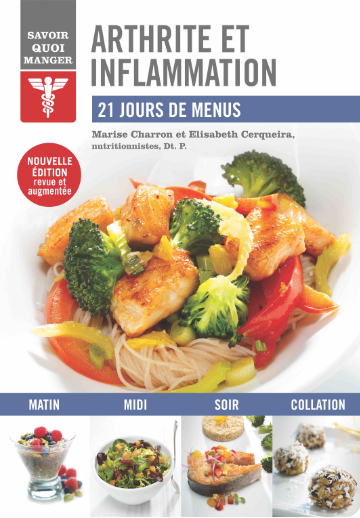
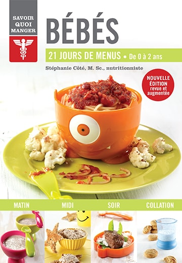
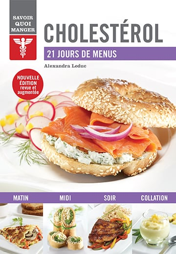
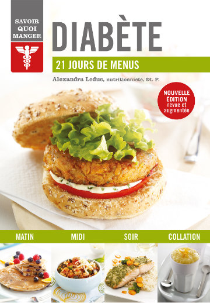
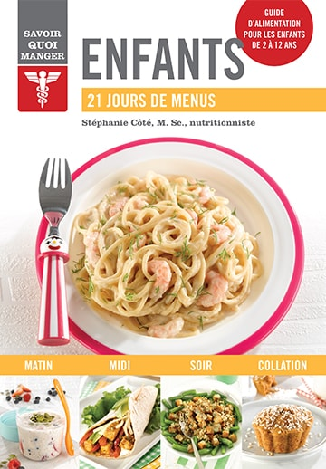
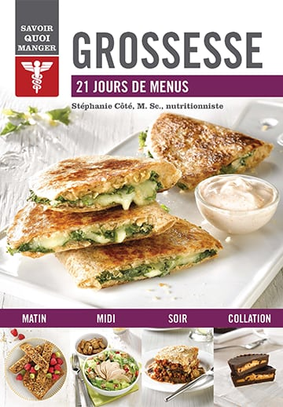
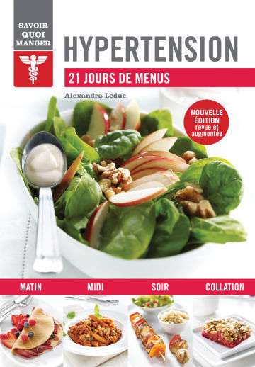
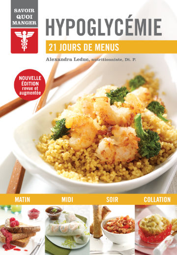
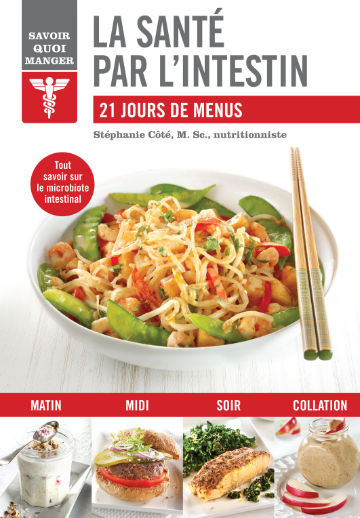
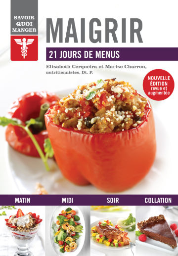
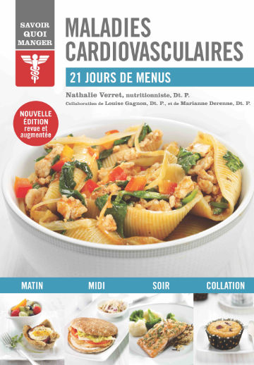
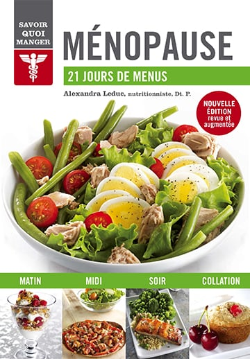
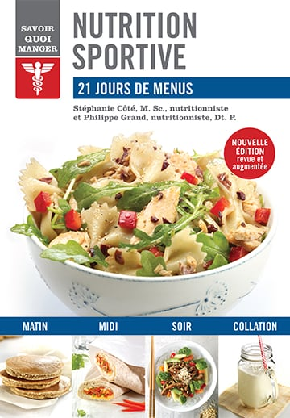
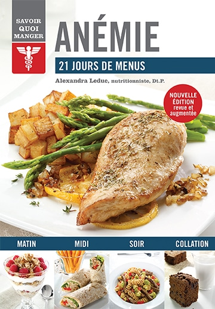
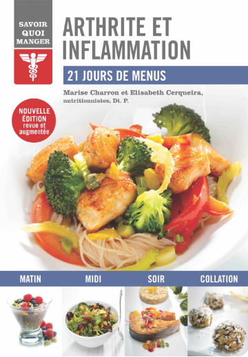
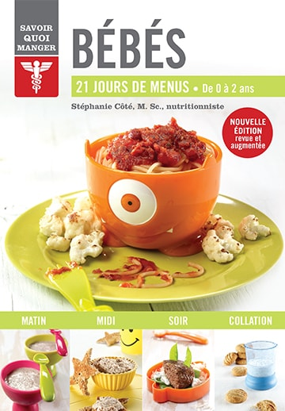
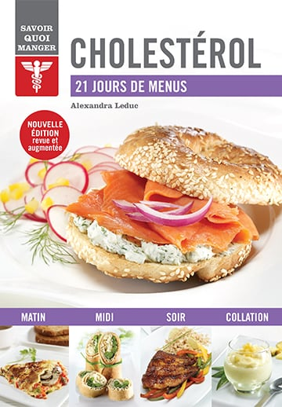
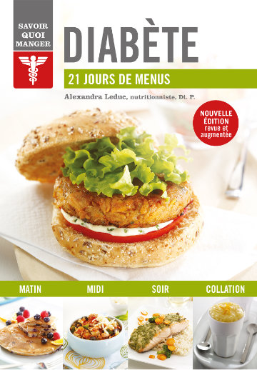
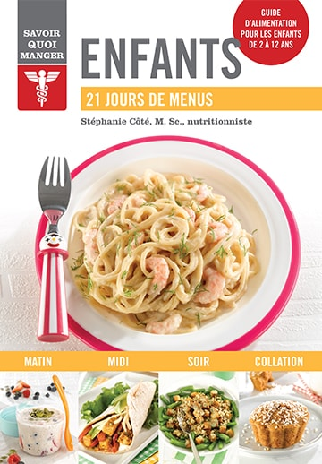
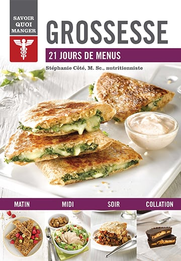
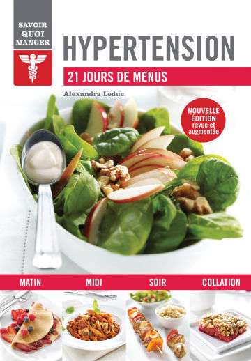
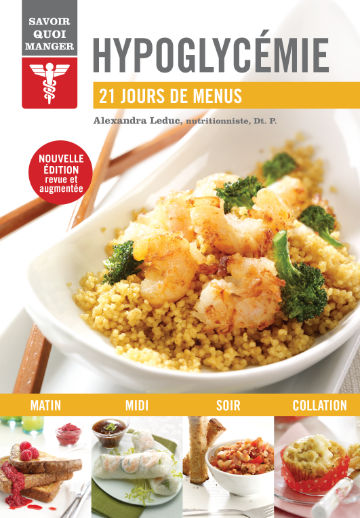
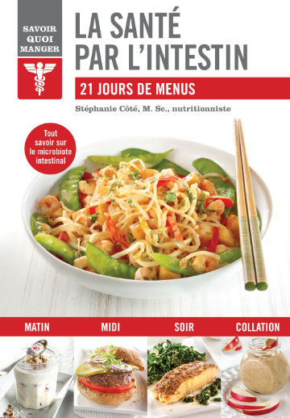
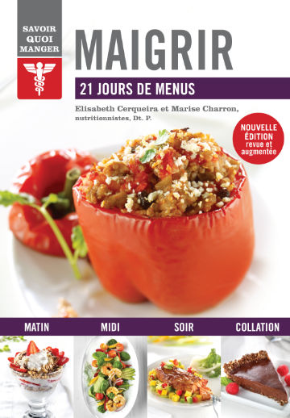
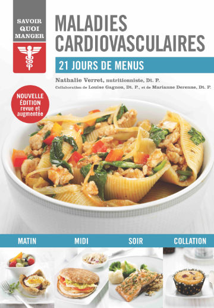
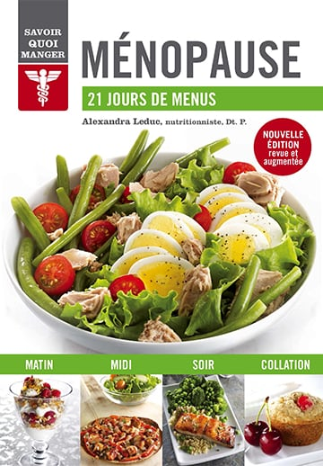
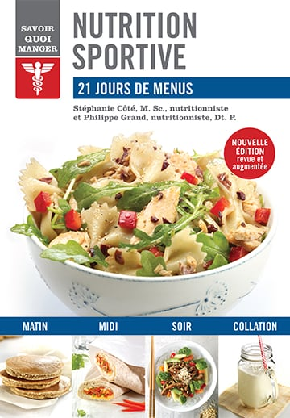
 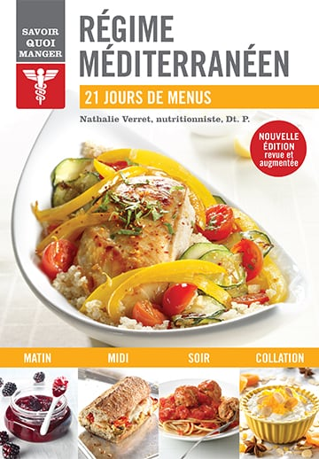
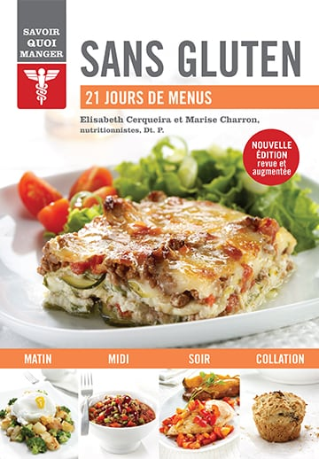
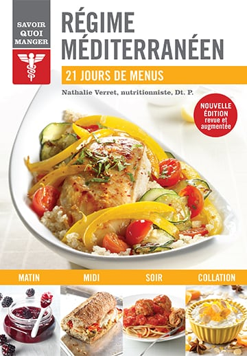
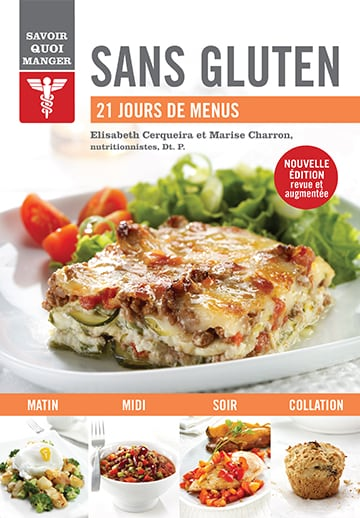
 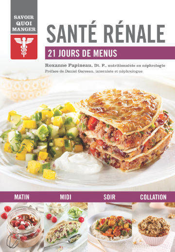
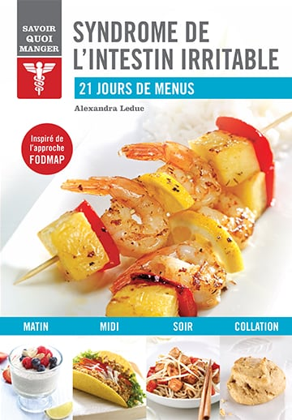
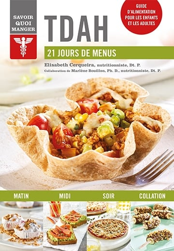
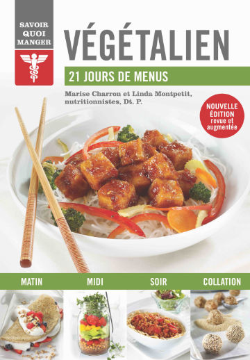
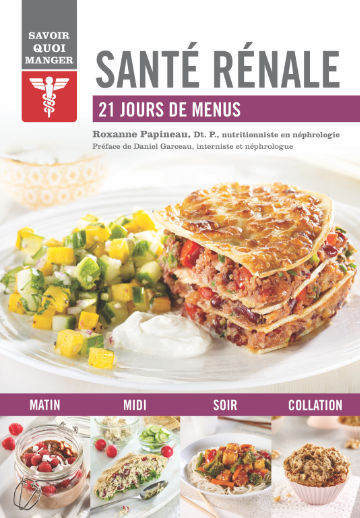
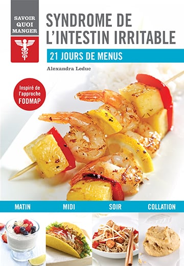
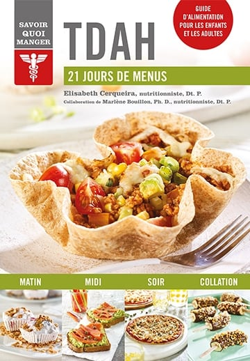
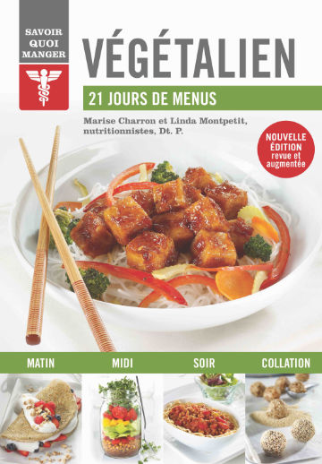
Il est souvent compliqué de trouver l’alimentation la mieux adaptée en fonction de son état de santé (diabète, anémie, arthrite, maladies cardiovasculaires, etc.), de ses restrictions alimentaires (végétalisme, sans gluten, sans lactose, etc.), de ses besoins particuliers (croissance, perte de poids, entraînement sportif, etc.) ou pour bien vivre certaines étapes de la vie (grossesse, ménopause, etc.).
Quelles sont les bonnes habitudes alimentaires à adopter pour améliorer sa santé ? Quels sont les aliments à privilégier et ceux à éviter ? Comment équilibrer ses repas ? Des nutritionnistes québécois démystifient la nutrition et répondent à toutes vos questions.
Unique en son genre, la collection Savoir quoi manger vous offre :
- des informations scientifiques vulgarisées pour bien comprendre comment votre alimentation peut influencer votre état de santé;
- des recommandations alimentaires simples pour combler vos besoins nutritionnels;
- quelques restrictions, mais surtout de nombreuses suggestions pour varier et équilibrer votre alimentation;
- des conseils pratiques pour adopter de saines habitudes alimentaires;
- des menus établis sur 21 jours;
- des recettes savoureuses, faciles à réaliser et agrémentées d’informations nutritionnelles.
Les ouvrages
Anémie
Alexandra Leduc
Vous avez une petite mine ? Le teint pâle ? Vous vous sentez fatigué, sans énergie, et il vous arrive aussi de souffrir de maux de tête ?
Tous ces symptômes désagréables sont peut-être dus tout simplement à une baisse d’énergie passagère, mais il peut aussi s’agir d’anémie. Celle-ci ne doit pas être prise à la légère. La prévention joue un rôle important chez les sujets à risque, et le problème doit être traité dès qu’il est diagnostiqué.
Ce guide vous permettra de :
- comprendre l’anémie et les différents facteurs déclencheurs;
- combler vos carences en fer ou en vitamines tout en profitant des plaisirs de la table;
- profiter de recommandations claires pour identifier les aliments répondant le mieux à vos besoins;
- planifier et diversifier vos repas et collations grâce à des menus quotidiens spécialement conçus pour prévenir et traiter l’anémie.
Découvrez des recettes savoureuses, faciles et rapides à préparer : strata aux épinards et au bacon, mini quiches au pain, foie de veau aux légumes, sauté de tofu, poivrons farcis au veau haché, bouchées de sole, mousse au chocolat et à l’orange… et retrouvez rapidement votre énergie.
Cliquez ici pour acheter le livre Anémie
Arthrite et inflammation
Elisabeth Cerqueira, nutritionniste, Dt. P.
et Marise Charron, nutritionniste, Dt. P.
Vos articulations sont gonflées et douloureuses ? Vous avez du mal à vous lever le matin, à marcher et à monter des escaliers ?
Même si aucun régime alimentaire ne peut soigner l’arthrite, une alimentation anti-inflammatoire peut vous aider à réduire vos douleurs articulaires.
Ce guide vous permettra de :
- comprendre les différents types d’arthrite et d’inflammation, et évaluer les facteurs de prédisposition;
- réduire vos symptômes en adoptant de saines habitudes alimentaires;
- profiter de recommandations claires et précises pour identifier facilement les meilleurs aliments;
- planifier et diversifier vos repas et vos collations grâce à des menus quotidiens adaptés à votre état de santé.
De plus, pour répondre aux besoins d’un plus grand nombre de personnes, les recettes de cet ouvrage vous permettront de cuisiner sans gluten.
Découvrez des recettes savoureuses, faciles et rapides à préparer : smoothie anti-inflammatoire, végépâté de légumes-racines, potage de patates douces au gingembre, salade de fenouil à l’orange, rouleaux de printemps, chou kale farci à la volaille et au riz basmati, saumon en croûte de noix, truffes santé, salade de fruits estivale au chia et savourez le plaisir de bien manger.
Cliquez ici pour acheter le livre Arthrite et inflammation
Bébés
Stéphanie Côté, M. Sc., nutritionniste
Vous vous demandez s’il est temps pour bébé de manger des aliments solides ? Par lesquels commencer ? Quels sont ceux à éviter, pourquoi et jusqu’à quel âge ? Quelles quantités lui donner pour qu’il soit en bonne santé ? Que faire s’il refuse de manger ?
Les informations contenues dans cette nouvelle édition ont été mises à jour, car les connaissances et les recommandations concernant l’alimentation des bébés évoluent au fil des années. Et entre les conseils lus sur Internet et ceux prodigués par l’entourage bienveillant, il est souvent difficile de s’y retrouver.
Ce guide vous permettra de :
- comprendre les besoins particuliers de votre bébé en matière d’alimentation, et savoir y répondre;
- diversifier son alimentation en toute sécurité;
- bénéficier de recommandations claires pour lui permettre de combler sa faim et de développer ses goûts;
- préparer des purées pour bébés en deux temps, trois mouvements;
- planifier ses repas et ses collations en fonction de son évolution grâce à des menus adaptés à son âge.
Découvrez des recettes pour petits et grands, faciles et rapides à préparer : purée d’ananas, purée de poivrons rouges, purée de poulet, biscuits à l’avoine, mini muffins aux pruneaux, boulettes de viande et de pois chiches, mini pains de lentilles, filets de poisson croustillants aux amandes, risotto aux crevettes nordiques, sandwichs de pain perdu au fromage, tofu aux fraises, pouding à la banane… et inculquez à votre bébé le plaisir de bien manger.
Cliquez ici pour acheter le livre Bébés
Cholestérol
Alexandra Leduc
Les conséquences d’une hypercholestérolémie peuvent être irréversibles. Adoptez dès aujourd’hui une hygiène de vie saine et une alimentation équilibrée pour améliorer votre bilan lipidique.
Grâce à de bonnes habitudes alimentaires, vous pouvez améliorer votre taux de cholestérol sanguin et réduire significativement les risques de maladies cardiovasculaires et d’accident vasculaire cérébral.
Ce guide vous permettra de :
- faire la lumière sur le « bon » et le « mauvais » cholestérol et comprendre les complications liées à une hypercholestérolémie;
- faciliter votre digestion et améliorer votre bilan lipidique;
- bénéficier de recommandations claires pour identifier facilement les différentes sources de gras (à favoriser, à éviter et à diminuer);
- planifier vos repas et prévoir des collations grâce à des menus quotidiens adaptés à votre état de santé.
Découvrez des recettes savoureuses, faciles et rapides à préparer : biscuits aux carottes, poulet en croûte d’amandes, sole épicée avec salade tiède de poivrons, quiche méditerranéenne, tofu brouillé au brocoli, croques au thon, yogourt glacé à l’ananas, biscottis santé… et sentez-vous plus léger.
Cliquez ici pour acheter le livre Cholestérol
Diabète
Alexandra Leduc
Vous êtes diabétique et vous ne savez pas ce que vous pouvez manger sans risque pour votre santé ?
Pour une personne diabétique, surveiller son alimentation est fondamental. De saines habitudes alimentaires peuvent non seulement aider à contrôler la glycémie, mais aussi prévenir l’apparition de complications liées au diabète.
Ce guide vous permettra de :
- comprendre le diabète et les mécanismes de régulation de la glycémie grâce à l’alimentation;
- répondre efficacement à vos besoins énergétiques;
- profiter de recommandations claires pour identifier facilement les bons et les mauvais ingrédients;
- planifier vos repas et vos collations grâce à des menus quotidiens adaptés à votre état de santé.
Découvrez des recettes savoureuses, faciles et rapides à préparer : pain doré à la cannelle, muffins aux carottes et au yogourt, saumon à la moutarde, quiche aux épinards, salade fruitée de poulet et de quinoa, hamburgers aux œufs, pouding au citron… et retrouvez le plaisir de manger, sans crainte et sans complexe.
Cliquez ici pour acheter le livre Diabète
Enfants
Stéphanie Côté, M. Sc., nutritionniste
Vous vous demandez si votre enfant mange trop ou pas assez, si ses repas comblent ses besoins nutritionnels, pourquoi il est capricieux et ce qu’il faut faire s’il refuse de manger ses légumes et réclame un dessert ?
Parce que l’alimentation permet aux enfants de bien grandir et d’être en bonne santé, elle est au centre des préoccupations de nombreux parents. L’enjeu est d’autant plus important que les habitudes alimentaires s’acquièrent dès le plus jeune âge.
Ce guide vous permettra de :
- connaître les besoins nutritionnels de votre enfant et savoir comment les combler;
- lui permettre de développer ses goûts tout en mangeant à sa faim;
- répondre à vos préoccupations : des problèmes d’appétit aux caprices à table, en passant par les allergies et les intolérances alimentaires;
- bénéficier de recommandations simples et de nombreux conseils pratiques pour inculquer de bonnes habitudes alimentaires à votre enfant;
- planifier vos repas grâce à des menus et recettes qui conviennent à toute la famille.
Découvrez de délicieuses recettes, faciles et rapides à préparer : sandwich matinal à l’œuf, tartinade choco-amande, quesadillas végé, tofu poêlé, wraps au saumon, salade d’orzo au poulet, boulettes de viande à la sauce tomate, muffins moelleux à la patate douce, houmous double chocolat… et partagez en famille le plaisir de bien manger !
Cliquez ici pour acheter le livre Enfants
Grossesse
Stéphanie Côté, M. Sc., nutritionniste
Vous êtes enceinte et préoccupée par votre alimentation ? Vous vous demandez quels sont les aliments à privilégier et ceux à éviter ? Que faire pour prévenir les nausées et autres troubles digestifs ? Quel poids vous devriez prendre ?
Bien manger pendant la grossesse permet non seulement d’assurer le bon développement de bébé, mais aussi de prévenir certaines maladies gestationnelles, comme le diabète, et d’atténuer plusieurs malaises et inconforts, tels que la fatigue, les nausées et les brûlures d’estomac.
Ce guide vous permettra de :
- comprendre le rôle crucial de l’alimentation pendant la grossesse;
- combler vos besoins nutritionnels et ceux de votre bébé;
- identifier les aliments à éviter pendant la grossesse et l’allaitement et ceux que vous pouvez manger sans crainte;
- bénéficier de recommandations simples et de nombreux conseils pratiques pour bien vivre votre grossesse et donner naissance à un bébé en parfaite santé;
- planifier facilement votre alimentation grâce à des recettes et menus conçus spécialement pour les femmes enceintes ou allaitantes.
Découvrez de délicieuses recettes, faciles et rapides à préparer : muffins au goût de brioche, soupe-repas aux lentilles, moussaka végé, truite sur croûte de chou-fleur, poulet tandoori, sauté de bœuf et de légumes au gingembre, bouchées de dattes et d’amandes chocolatées, brownies meringués, banana split… et gâtez-vous… tous les deux !
Cliquez ici pour acheter le livre Grossesse
Hypertension
Alexandra Leduc
L’hypertension est l’un des principaux facteurs de risque de maladies cardiovasculaires bien que, dans la plupart des cas, elle ne s’accompagne d’aucun symptôme. Alors, comment peut-on échapper à ce « tueur silencieux » ?
La solution est dans votre assiette. L’alimentation figure au premier rang parmi les facteurs qui ont une incidence sur la pression artérielle. Même si cet ouvrage s’adresse d’abord aux hypertendus, il est aussi recommandé à tous pour limiter les risques d’hypertension à long terme.
Ce guide vous permettra de :
- comprendre pourquoi l’hypertension est dangereuse pour la santé;
- modifier votre hygiène de vie afin de réduire votre pression artérielle;
- bénéficier de recommandations claires pour adopter dès aujourd’hui un régime alimentaire hypotenseur;
- planifier et diversifier vos repas et collations grâce à des menus quotidiens spécialement conçus pour prévenir et traiter l’hypertension.
Découvrez des recettes savoureuses, faciles et rapides à préparer : frittata au brocoli, pain de saumon, chili végétarien, brochettes de poulet à la moutarde, mini quiches, mijoté de bœuf, bâtonnets de poisson croustillants, délice aux fruits, biscuits à l’orange… et renforcez votre capital santé.
Cliquez ici pour acheter le livre Hypertension
Hypoglycémie
Alexandra Leduc
Vous souffrez régulièrement de baisses d’énergie subites, d’étourdissements, accompagnés ou non de sueurs et de tremblements… un état de faiblesse qui disparaît aussitôt après avoir ingéré du sucre ? Et pourtant, vous n’êtes pas diabétique !
En cas d’hypoglycémie, le seul traitement est l’alimentation.
Ce guide vous permettra de :
- comprendre l’hypoglycémie réactionnelle et identifier vos besoins nutritionnels;
- stabiliser votre glycémie et ainsi prévenir les baisses soudaines d’énergie;
- bénéficier de recommandations claires pour conserver votre énergie tout au long de la journée;
- planifier vos repas et prévoir vos collations grâce à des menus quotidiens adaptés à votre rythme.
Découvrez des recettes savoureuses, faciles et rapides à préparer : gruau énergie, tofu matinal, muffins à l’ananas et aux courgettes, salade de pois chiches, burgers de saumon, poulet au parmesan et à la bruschetta, crevettes à la noix de coco, panna cotta à l’orange, croustade aux amandes et aux framboises… et retrouvez votre énergie.
Cliquez ici pour acheter le livre Hypoglycémie
La santé par l’intestin
Stéphanie Côté, M. Sc., nutritionniste
Vous souhaitez améliorer votre état de santé et prévenir certaines maladies ? Et si la solution passait par votre intestin ?
Saviez-vous qu’un déséquilibre du microbiote intestinal (anciennement appelé flore intestinale) peut entraîner des pathologies de type inflammatoire, des maladies cardiovasculaires, des allergies, des problèmes d’obésité et de diabète, des cancers ou encore des états dépressifs, et que votre alimentation peut contribuer à changer la donne ?
Ce guide vous permettra de :
- comprendre, à la lumière des récentes avancées scientifiques, comment votre santé intestinale peut influencer votre état général et vice-versa;
- adapter progressivement votre alimentation pour favoriser la prolifération de bonnes bactéries dans votre intestin;
- profiter de recommandations claires afin de manger plus de végétaux et les apprécier pour leurs saveurs et leurs bienfaits sur votre santé;
- planifier facilement vos repas et vos collations grâce à des menus quotidiens flexibles.
Découvrez des recettes savoureuses, faciles et rapides à préparer : pancakes au kéfir, biscuits à l’avoine et aux bananes, salade de betteraves aux légumineuses, bâtonnets de tofu croustillants, sandwichs au tempeh mariné, röstis de patates douces et saumon fumé, burritos au poulet et aux haricots noirs, croustilles de légumes-racines, bouchées chocolatées, gâteau au yogourt et aux fraises parfumé au basilic… et croquez la vie à pleines dents !
Cliquez ici pour acheter le livre La santé par l’intestin
Maigrir
Elisabeth Cerqueira, nutritionniste, Dt. P.
et Marise Charron, nutritionniste, Dt. P.
Maigrir sans suivre un régime draconien, sans aliments interdits, sans danger pour votre santé et surtout sans reprendre les kilos perdus, c’est possible !
Comment ? En modifiant votre mode de vie et en adoptant de saines habitudes alimentaires qui vous permettront de contrôler votre poids tout en savourant les plaisirs de la vie.
Ce guide vous permettra de :
- comprendre pourquoi vous avez de la difficulté à maigrir ou à conserver un poids santé;
- prendre conscience que votre poids dépend non seulement de votre alimentation, mais aussi, entre autres, de votre niveau d’activité physique, de votre sommeil et de la gestion de vos émotions;
- profiter de recommandations simples pour adopter facilement une alimentation saine qui vous permettra de combler vos besoins nutritionnels sans ressentir la faim;
- planifier vos repas et prévoir vos collations grâce à des menus quotidiens équilibrés.
Découvrez des recettes savoureuses, simples et rapides à préparer : quesadillas au poulet, chips de choux de Bruxelles, quiche en croûte de quinoa, saumon mariné et salsa de mangue, lasagne de courgettes aux fruits de mer, poulet rôti à la portugaise, tarte sablée aux amandes et au chocolat, tiramisu aux dattes… et retrouvez le plaisir de manger sans culpabilité.
Cliquez ici pour acheter le livre Maigrir
Maladies cardiovasculaires
Nathalie Verret, nutritionniste, Dt. P.
Votre santé vous tient particulièrement à cœur ?
Réduisez les risques de maladies cardiovasculaires grâce à une alimentation équilibrée et une pratique régulière d’activités physiques. Vous pourrez ainsi non seulement améliorer votre taux de cholestérol sanguin et votre tension artérielle, mais aussi réduire ou maintenir votre tour de taille.
Ce guide vous permettra de :
- comprendre les maladies cardiovasculaires et en savoir plus sur les diètes qui ont fait leurs preuves;
- améliorer votre bilan lipidique en adoptant de saines habitudes alimentaires;
- profiter de recommandations claires pour identifier facilement les aliments qui favorisent la santé de votre cœur ainsi que ceux qui y nuisent;
- planifier vos repas et vos collations grâce à des menus quotidiens adaptés à votre état de santé.
Découvrez des recettes savoureuses, faciles et rapides à préparer : gaufres au son d’avoine, saumon au miel et à l’aneth, soupe aux lentilles, couscous aux légumes, pizzas aux tomates et au bocconcini, poulet crémeux au cari et au curcuma, biscottis, croustade aux pommes et aux fraises, glace à la mangue... et remplissez votre assiette de bons aliments pour le cœur.
Cliquez ici pour acheter le livre Maladies cardiovasculaires
Ménopause
Alexandra Leduc
À partir de 40 ans, la chute hormonale s’accentue et certaines femmes commencent à ressentir des symptômes associés à la ménopause : bouffées de chaleur, modification de la silhouette, fatigue, etc.
Préparez votre corps à mieux vivre cette transition hormonale et réduisez non seulement les symptômes, mais aussi les risques de problèmes de santé liés à la ménopause grâce à une alimentation adaptée.
Ce guide vous permettra de :
- comprendre la ménopause et les conséquences des bouleversements hormonaux sur votre organisme;
- soulager vos symptômes tout en réduisant les risques d’ostéoporose et de maladies cardiovasculaires;
- bénéficier de recommandations claires pour identifier facilement les bons et les mauvais ingrédients;
- planifier vos repas et prévoir vos collations grâce à des menus quotidiens adaptés à votre métabolisme.
Découvrez des recettes savoureuses, faciles et rapides à préparer : smoothie réveille-matin, quinoa petit-déjeuner, pizzas au poulet à la sauce barbecue, saumon glacé au miel, papillote de fruits de mer, salade fraîche aux pois chiches grillés, muffins à la salade de fruits… et préservez votre capital santé.
Cliquez ici pour acheter le livre Ménopause
Nutrition sportive
Stéphanie Côté, M. Sc., nutritionniste
et Philippe Grand, nutritionniste, Dt. P.
Course à pied, vélo, zumba, natation, marathon… « Dis-moi comment tu t’entraînes et je te dirai quoi manger. »
Quels que soient vos objectifs sportifs et vos motivations, que vous fassiez une heure de spinning trois fois par semaine ou que vous prépariez un ultra-marathon, votre alimentation influence non seulement vos performances, mais aussi le plaisir que vous prenez à vous entraîner.
Ce guide vous permettra de :
- comprendre comment votre organisme utilise les nutriments qui lui servent de carburant;
- combler efficacement vos besoins en fonction des activités que vous pratiquez et de vos horaires d’entraînement;
- bénéficier de recommandations claires pour prendre du plaisir à bouger, à développer votre endurance et à améliorer vos performances;
- bien planifier votre alimentation avant, pendant et après vos entraînements et vos compétitions.
Découvrez des recettes savoureuses, faciles et rapides à préparer : petit-déjeuner à boire, superbarres au café, boules d’énergie, jujubes, tofu croustillant au brocoli, galettes de betterave, soupe-repas aux légumineuses, omelette dans une tasse, hareng alla puttanesca, pizza au poulet, pouding au chocolat… et mettez vos chaussures de sport.
Cliquez ici pour acheter le livre Nutrition sportive
Ostéoporose
Alexandra Leduc
Les os se fragilisent avec l’âge, et l’ostéoporose est l’un des principaux facteurs de risque pour les fractures, notamment de la hanche, de la colonne vertébrale et du poignet.
Le capital osseux est largement déterminé par l’hérédité, mais une alimentation et des habitudes de vie saines peuvent contribuer à préserver la santé des os le plus longtemps possible.
Ce guide vous permettra de :
- comprendre pourquoi vos os se fragilisent;
- modifier votre hygiène de vie pour mieux renforcer votre ossature;
- profiter de recommandations claires pour protéger votre capital osseux en adoptant une alimentation adaptée;
- planifier et diversifier vos repas et collations grâce à des menus quotidiens spécialement conçus pour prévenir les risques de fractures.
Découvrez des recettes savoureuses, faciles et rapides à préparer : œufs brouillés au fromage suisse, potage aux lentilles et aux tomates, tofu croustillant aux légumes, brochettes de poulet à l’érable, cubes de saumon aigre-doux, croquettes de pois chiches, crème au citron… et renforcez efficacement votre ossature.
Cliquez ici pour acheter le livre Ostéoporose
Régime méditerranéen
Nathalie Verret, nutritionniste, Dt. P.
Reconnu par l’UNESCO comme « patrimoine culturel immatériel de l’humanité », le régime méditerranéen s’adresse à tous ceux qui souhaitent adopter un mode d’alimentation sain qui réduit notamment les risques de maladies cardiovasculaires et de diabète, en plus de favoriser un meilleur contrôle du poids.
Ce guide vous permettra de :
- découvrir le secret de la longévité et de la qualité de vie remarquable des populations méditerranéennes;
- améliorer votre état de santé, réduire les risques de maladies et augmenter votre longévité;
- profiter de recommandations claires pour bénéficier d’une alimentation saine et équilibrée;
- planifier vos repas et vos collations grâce à des menus quotidiens variés.
Découvrez de délicieuses recettes, faciles et rapides à préparer : pouding au riz à l’anis, pain aux bananes, dattes et noisettes, minestrone, sauté de calmars et de crevettes, filets de turbot croustillants, moussaka, salade de couscous au poulet épicé et aux figues, chili de veau au cumin, pamplemousse au four, mousse aux fraises… et savourez la vie.
Cliquez ici pour acheter le livre Régime méditerranéen
Sans gluten
Elisabeth Cerqueira, nutritionniste, Dt. P.
et Marise Charron, nutritionniste, Dt. P.
Depuis quelques années, le « sans gluten » est à la mode. On assiste à un engouement sans précédent. Est-ce une mode passagère ? Peut-on réellement être intolérant au gluten ?
Cet ouvrage présente des informations fiables et pertinentes rédigées par des diététistes chevronnées. Il s’adresse à toutes les personnes désirant en connaître davantage sur tout ce qui a trait au gluten : Quels sont les symptômes de la maladie cœliaque ? Qu’est-ce que le gluten ? Où se cache-t-il dans notre alimentation ? Comment éviter les carences alimentaires liées à un régime sans gluten ? Comment cuisiner sans gluten ?
Ce guide vous permettra de :
- comprendre la maladie cœliaque (plus connue sous le nom d’entéropathie au gluten), la sensibilité au gluten non cœliaque et l’allergie au blé;
- profiter de recommandations simples pour suivre facilement un régime sans gluten équilibré;
- diversifier votre alimentation et cuisiner sans gluten;
- planifier vos repas et collations grâce à des menus quotidiens adaptés à votre état de santé.
Découvrez des recettes savoureuses, faciles et rapides à préparer : gruau de sarrasin et purée de fruits, soupe aux pois chiches et aux tomates, salade de lentilles aux échalotes, lasagne de courgettes à la florentine, saumon à l’orange et au gingembre, pain nutritif sans gluten, gâteau moelleux aux dattes... et transformez vos contraintes en plaisir.
Cliquez ici pour acheter le livre Sans gluten
Sans lactose
Marie-France Lalancette, nutritionniste, Dt. P.
La consommation de lait ou de produits laitiers peut engendrer des troubles digestifs, des problèmes respiratoires ou bien des réactions dermatologiques chez certaines personnes qui souffrent d’allergie au lait ou d’intolérance au lactose, deux pathologies bien distinctes, mais souvent confondues.
Grâce à cet ouvrage, découvrez comment différencier l’une et l’autre de ces conditions et modifier au besoin votre alimentation pour bénéficier d’une meilleure qualité de vie en seulement quelques semaines.
Ce guide vous permettra de :
- manger sainement en adoptant une alimentation saine, équilibrée et exempte de produits laitiers sans souffrir de carences nutritionnelles;
- disposer de toute l’information nécessaire pour vous aider à modifier votre alimentation et vous guider dans votre apprentissage;
- profiter de conseils pratiques pour vous permettre de rétablir une relation agréable avec la nourriture;
- planifier vos repas et collations grâce à des menus quotidiens spécialement conçus pour éviter les carences nutritionnelles.
Découvrez des recettes savoureuses, faciles et rapides à préparer : smoothie banane-arachides, œufs à la bénédictine, galettes de sarrasin, pâté au saumon, quiches aux légumes verts, pizza asiatique, rouleaux de lasagne, parfaits à la mousse au citron, éclairs au chocolat, tiramisu aux deux ganaches… et retrouvez le plaisir de manger.
Cliquez ici pour acheter le livre Sans lactose
Santé rénale
Roxanne Papineau, Dt. P., nutritionniste en néphrologie
L’alimentation est un facteur clé en matière de prévention et de traitement des maladies rénales dès les stades précoces.
À l’heure actuelle, il n’existe aucun traitement curatif pour l’insuffisance rénale chronique. Toutefois, son évolution peut être ralentie, voire stabilisée notamment grâce à des mesures nutritionnelles visant à préserver la fonction rénale. Un régime alimentaire adapté permet également de limiter d’éventuelles complications (ex. : fragilité osseuse, hypertension, maladies cardiovasculaires).
Ce guide vous permettra de :
- comprendre les enjeux des maladies rénales et l’importance d’une alimentation adaptée;
- prévenir l’insuffisance rénale, son évolution et ses complications;
- modifier facilement vos habitudes alimentaires grâce à des recommandations simples et de nombreux conseils pratiques;
- planifier votre alimentation en suivant les menus spécialement élaborés;
- cuisiner de bons repas pour préserver votre fonction rénale et améliorer votre état de santé.
Découvrez des recettes faciles et rapides à préparer : smoothie velouté, œufs brouillés aux épinards, potage de carottes aux amandes, pochettes de pita au thon, pain de lentilles au millet, spaghettis aux noix de Grenoble, ratatouille aux haricots blancs, étagé mexicain, tofu Tao croustillant, cari de poulet à l’ananas, brownies aux courgettes, pouding au riz brun... et faites le plein de saveurs.
Cliquez ici pour acheter le livre Santé rénale
Syndrome de l’intestin irritable
Alexandra Leduc
Vous vous sentez souvent ballonné, votre ventre gargouille à n’en plus finir, votre transit est irrégulier… et vous avez tout essayé pour éviter ces troubles digestifs ?
Même si aucun régime alimentaire ne peut soigner le syndrome de l’intestin irritable, une alimentation adaptée peut vous aider à combattre efficacement les symptômes et à réduire vos inconforts.
Cette nouvelle édition, revue et augmentée, s’inspire de l’approche FODMAP, une méthode novatrice qui permet de soulager les symptômes gastro-intestinaux chez la plupart des personnes atteintes du syndrome de l’intestin irritable.
Ce guide vous permettra de :
- comprendre le syndrome de l’intestin irritable et savoir comment gérer les crises;
- soulager vos symptômes, leur durée et leur fréquence pour avoir une meilleure qualité de vie;
- profiter de recommandations claires pour identifier facilement les ingrédients qui vous conviennent et ceux que vous tolérez moins bien en adoptant temporairement une alimentation pauvre en FODMAP;
- planifier vos repas et vos collations grâce à des menus quotidiens adaptés à votre sensibilité digestive.
Découvrez des recettes savoureuses, faciles et rapides à préparer : crème d’avoine, muffins aux framboises, porc farci aux olives, poulet à l’ananas, quiche aux poivrons, casserole végétarienne, cannellonis au fromage… et retrouvez le plaisir de manger sans appréhension.
Cliquez ici pour acheter le livre Syndrome de l’intestin irritable
TDAH
Elisabeth Cerqueira, nutritionniste, Dt. P.
avec la collaboration de Marlène Bouillon, Ph. D., nutritionniste, Dt. P.
Le trouble du déficit de l’attention avec ou sans hyperactivité (TDAH) se traduit par des difficultés d’attention et de concentration, de l’hyperactivité et de l’impulsivité résultant d’une altération des fonctions cérébrales. À l’heure actuelle, le traitement le plus approprié de ce trouble neurologique serait une combinaison d’approches, parmi lesquelles figurent l’hygiène de vie et l’alimentation.
En cas de TDAH, bien se nourrir est un véritable défi. Ce trouble engendre des comportements alimentaires peu favorables à l’équilibre nutritionnel, ce qui affecte le fonctionnement cérébral et augmente l’intensité des symptômes. Il est donc important de sortir de ce cercle vicieux.
Ce guide vous permettra de :
- comprendre le TDAH et atténuer les symptômes tout en comblant les besoins nutritionnels;
- connaître les aliments et les comportements à privilégier et ceux à éviter;
- modifier facilement votre alimentation grâce à des recommandations simples et de nombreux conseils pratiques;
- planifier les repas et les collations en suivant les menus.
Découvrez de savoureuses recettes, faciles à préparer : smoothie réveille-matin, omelette matinale aux fruits, chips de banane plantain et guacamole, soupe asiatique aux crevettes, bâtonnets de tofu croustillants, pizzas du capitaine Crochet, sushis éclair, brochettes de poulet souvlaki, burgers et frites de patates douces, crème brûlée aux noix de cajou, bananes-sucettes enrobées de chocolat ... et dégustez chaque bouchée.
Cliquez ici pour acheter le livre TDAH
Végétalien
Marise Charron, nutritionniste, Dt. P.
et Linda Montpetit, nutritionniste, Dt. P.
Vous souhaitez devenir végétalien ou simplement végétaliser votre alimentation, mais vous ne savez pas par quoi remplacer la viande, le poisson et les produits laitiers ? Vous vous interrogez sur le risque de carences en protéines, fer, calcium et autres nutriments ?
Une alimentation végétalienne bien équilibrée permet de combler tous les besoins de l’organisme et de jouir d’une bonne santé. À long terme, elle contribue à diminuer les risques de maladies du cœur, de goutte, de diabète de type 2 et de plusieurs types de cancers.
Ce guide vous permettra de :
- végétaliser votre alimentation sans risque de souffrir de carences nutritionnelles;
- comprendre comment combler vos besoins nutritionnels pour améliorer votre forme physique et réduire les risques de maladies;
- adopter un nouveau mode d’alimentation varié et savoureux grâce à des recommandations simples et de nombreux conseils pratiques;
- équilibrer facilement vos repas et vos collations en suivant les menus quotidiens.
Découvrez de délicieuses recettes, faciles et rapides à préparer : smoothie vert fruité, petit-déjeuner nourrissant aux petits fruits, houmous d’edamames à la betterave, bols de Bouddha, chili aux patates douces, végéburgers, spaghetti de légumineuses primavera, tofu général Tao, pâté chinois aux lentilles et aux légumes, boules d’énergie à l’érable, muffins croustillants choco-poires, tarte glacée au chocolat sans cuisson, gâteau crémeux aux fraises… et laissez-vous séduire par de nouvelles saveurs !
Cliquez ici pour acheter le livre Végétalien
Les auteurs
Elisabeth Cerqueira nutritionniste, Dt. P.
Elisabeth Cerqueira est diplômée de l’Université McGill et exerce en tant que nutritionniste – membre de l’Ordre professionnel des diététistes du Québec (OPDQ), depuis plus de 20 ans.
Elle est cofondatrice et présidente de NutriSimple, un réseau de 80 cliniques privées de nutrition au Québec. Elle est également coprésidente de MNutrition, qui compte plus de 40 cliniques spécialisées dans les troubles du comportement alimentaire. Les médias la sollicitent régulièrement pour partager son expertise.
Elisabeth est co-auteure, avec Marise Charron, de trois livres dans la collection Savoir quoi manger (Arthrite et inflammation, Maigrir et Sans gluten), de cinq ouvrages dans la collection Superaliments (Anti-âge, Bonheur, Mémoire, Diabète et Arthrite), qui a remporté le prix de « La meilleure collection de livres de cuisine santé au Canada » aux Gourmand World Cookbook Awards 2016, et de Diabète : aliments santé et recettes gourmandes. Elle a également écrit, avec la collaboration de Marlène Bouillon, TDAH dans la collection Savoir quoi manger, lequel a été primé aux Saveurs du Canada (Taste Canada Awards) en 2020, dans la catégorie « Livres de cuisine santé et diète particulière ».
Dans son cabinet privé, Elisabeth apprend à ses clients à mieux se nourrir en axant leurs efforts sur la qualité nutritionnelle plutôt que sur les calories pour des résultats à long terme et une gestion simple au quotidien. Pour atteindre l’équilibre alimentaire, elle propose des solutions réalistes et personnalisées, que ce soit en cas d’obésité, de diabète, d’arthrite, d’un système gastro-intestinal perturbé ou d’un trouble de comportement alimentaire.
Issue d’une famille européenne et mère de trois enfants, Elisabeth aime profiter des plaisirs de la table. Pour elle, bien manger rime avec gaieté et simplicité.
nutrisimple.com
mnutrition.ca
Marise Charron, nutritionniste, Dt. P.
Marise Charron est diplômée de l’Université Laval et exerce en tant que nutritionniste – membre de l’Ordre professionnel des diététistes du Québec (OPDQ), depuis plus de 30 ans.
Elle est cofondatrice de NutriSimple, un réseau de 80 cliniques privées de nutrition au Québec et coprésidente de MNutrition, qui compte plus de 40 cliniques spécialisées dans les troubles du comportement alimentaire. Entrepreneure dans l’âme, elle a aussi fondé deux autres sociétés : Harmonie Santé et Nutrition2C pour offrir des formations continues aux diététistes-nutritionnistes ainsi qu’un logiciel d’analyse et d’étiquetage nutritionnel.
Marise est co-auteure, avec Elisabeth Cerqueira, de trois livres dans la collection Savoir quoi manger (Arthrite et inflammation, Maigrir et Sans gluten), de cinq ouvrages dans la collection Superaliments (Anti-âge, Bonheur, Mémoire, Diabète et Arthrite), qui a remporté le prix de « La meilleure collection de livres de cuisine santé au Canada » aux Gourmand World Cookbook Awards 2016, et de Diabète : aliments santé et recettes gourmandes. Elle est également l’auteure de Fast-food santé et la co-auteure, avec Linda Montpetit, de Végétalien dans la collection Savoir quoi manger.
Marise aime transmettre ses connaissances tant sur la nutrition que sur la cuisine, deux domaines connexes qui la passionnent. Elle exerce en cabinet et adore la relation privilégiée qu’elle a avec ses clients. Son approche est simple et basée sur le respect de soi et de ses signaux corporels, sur l’importance des végétaux et sur le plaisir de manger et de savourer les aliments. Elle ne croit pas aux régimes miracles, mais à un changement d’habitudes alimentaires et d’hygiène de vie à long terme.
nutrisimple.com
mnutrition.ca
Stéphanie Côté, M. Sc., nutritionniste
Stéphanie Côté est une nutritionniste-communicatrice, car la communication la passionne autant que l’alimentation, et qu’elle ne voulait pas choisir entre les deux ! En 2000, Stéphanie a remporté le premier prix de la bourse Fernand-Seguin qui vise à reconnaître les talents en vulgarisation scientifique. Elle a ainsi eu le privilège d’apprendre auprès de grandes pointures du journalisme. Depuis, elle accumule les collaborations à la télévision, à la radio, dans les journaux, dans les magazines et sur le Web.
Stéphanie s’intéresse de près aux comportements alimentaires, à l’actualité en nutrition, à la consommation et à la cuisine pratique. Elle croit fermement que bien manger, c’est bon, c’est plaisant et que ça peut être simple.
Nutritionniste curieuse, maman attentionnée de deux enfants et sportive passionnée, elle a développé une expertise dans plusieurs domaines qui lui tiennent à cœur et au corps : le microbiote intestinal, l’alimentation de la femme enceinte et des enfants, ainsi que la nutrition sportive. Elle a d’ailleurs écrit La santé par l’intestin, Grossesse, Bébés et Enfants, et co-écrit Nutrition sportive avec Philippe Grand, cinq ouvrages de la collection Savoir quoi manger. Aux Saveurs du Canada (Taste Canada Awards), ont été primés dans la catégorie « Livres de cuisine santé et diète particulière » : Nutrition sportive (2016), La santé par l’intestin (2017), ainsi que Grossesse et Enfants (2020).
stephaniecote.ca
Facebook : Stéphanie Côté, nutritionniste
Philippe Grand, nutritionniste, Dt. P.
Philippe Grand est un nutritionniste diplômé de l’Université de Montréal. Après avoir suivi une formation en cuisine à l’Institut du Tourisme et d’Hôtellerie du Québec (ITHQ), il a travaillé pendant plusieurs années en restauration. Ce fin connaisseur et fin gourmet a rencontré Stéphanie Côté chez Extenso, le centre de référence en nutrition de l’Université de Montréal. Collègues pendant plusieurs années, ils se connaissent bien et savent reconnaître et exploiter les forces de chacun. Ensemble, ils ont co-écrit Nutrition sportive dans la collection Savoir quoi manger, un ouvrage primé aux Saveurs du Canada en 2016, dans la catégorie « Livres de cuisine santé et diète particulière ».
Marie-France Lalancette, nutritionniste, Dt. P.

Marie-France Lalancette est diplômée en biologie de l’Université McGill. Elle a obtenu un certificat en sciences de l’éducation à l’UQAM et un baccalauréat en nutrition à l’Université de Montréal. Elle a aujourd’hui plus de 20 ans d’expérience en tant que nutritionniste.
Elle a fondé le Réseau Nutrition Québec qui a permis de libéraliser la pratique de la nutrition pédiatrique en privé au Québec. Elle bénéficie d’expériences enrichissantes au CHU Sainte-Justine et en CLSC, service enfance-famille, mais c’est surtout au sein de sa famille – dont trois membres sont allergiques au lait – qu’elle a pu mettre en pratique ses connaissances de la cuisine sans produits laitiers.
Auteure de plusieurs livres de nutrition, Marie-France offre des conférences au grand public afin de vulgariser les connaissances scientifiques relatives à la nutrition, ainsi que des formations aux professionnels sur des thèmes d’actualité. Parallèlement, elle a fondé la Coalition Nutrition sans Frontières et se consacre à cet organisme ayant pour mission de mettre fin à la malnutrition des enfants dans le monde.
Alexandra Leduc

Alexandra Leduc est diplômée en biochimie et en nutrition de l’Université Laval. Elle est l’auteure de nombreux livres de nutrition dans la collection Savoir quoi manger (Anémie, Cholestérol, Diabète, Hypertension, Hypoglycémie, Ménopause, Ostéoporose, Syndrome de l’intestin irritable), ainsi que de quatre autres livres de recettes (Cuisine 5 ingrédients, Cuisine 5 ingrédients à la rescousse des parents, Cuisine camping plein air et Petits festins de tous les jours).
Elle est également la fondatrice d’Alex cuisine (alexcuisine.com), un blogue qui fait la promotion de la santé par la cuisine simple, saine et rapide. Son plus grand plaisir est de créer des recettes savoureuses et faciles à préparer avec des ingrédients accessibles.
En 2019, Alexandra a fondé Wellness avec Alex, une entreprise de nutrition holistique et de bien-être pour les femmes et les entrepreneures, afin de leur permettre d’optimiser leur corps pour soutenir leur énergie et leurs projets.
alexcuisine.com
alexandraleduc.com
Linda Montpetit, nutritionniste, Dt. P.
Linda Montpetit est nutritionniste diplômée de l’Université McGill et membre de l’Ordre professionnel des diététistes du Québec (OPDQ) et des Diététistes du Canada. Mère de quatre enfants, elle accorde une place de choix aux aliments frais dans l’alimentation quotidienne. Pour elle, bien manger rime d’abord avec plaisir et simplicité.
Son intérêt pour le végétarisme s’est accru lors de la naissance de son dernier enfant. Ce qui n’était d’abord qu’une bonne façon de maximiser le budget familial s’est vite transformé en conviction à la fois personnelle et professionnelle. « Je vois le végétarisme et le végétalisme comme une découverte culinaire de nouvelles saveurs et textures. Chacun y va à son rythme sans règles rigides. Une alimentation saine ne doit en rien diminuer notre plaisir de manger. » Linda se donne pour mission de donner envie à tous, végétariens ou non, d’intégrer davantage de végétaux dans leur alimentation.
Ses nombreuses années d’expérience dans les médias lui ont permis de développer un sens aigu de la communication. Elle intervient aussi bien à la radio que dans plusieurs magazines, sites Internet et revues spécialisées, et elle a participé à plusieurs campagnes visant à informer la presse sur les nouvelles tendances en nutrition. Depuis 2012, elle est consultante pour les marchés Metro du Québec.
Elle a co-écrit le livre Végétalien de la collection Savoir quoi manger avec sa collègue Marise Charron, et elle est l’auteure de Végé gourmand publié en 2019 aux Éditions Modus Vivendi.
Soucieuse d’améliorer la santé de la population de sa région, elle a géré l’implantation de cliniques de consultation privée NutriSimple dans les Laurentides. Par ailleurs, en 2020, elle a cofondé Sanakido, un programme de médecine par le mode de vie dont la mission est d’accompagner les personnes qui désirent maximiser leur santé et leur bien-être en modifiant leurs habitudes de vie.
totalementlegume.com
Roxanne Papineau, nutritionniste, Dt. P.
Roxanne Papineau est détentrice d’un baccalauréat en nutrition et d’un diplôme d’études supérieures spécialisées de 2e cycle en alimentation fonctionnelle et santé de l’Université Laval. Membre de l’Ordre professionnel des diététistes du Québec, elle est nutritionniste clinicienne en néphrologie à l’Institut universitaire de cardiologie et de pneumologie de Québec (IUCPQ). Elle cumule plus de 15 ans d’expertise dans le suivi nutritionnel des patients atteints de maladies rénales.
Roxanne est présidente du Regroupement des nutritionnistes en néphrologie du Québec et membre du comité scientifique de D.E.V.E.N.I.R., un regroupement multidisciplinaire de professionnels de la santé en néphrologie. Elle participe également au comité d’experts en santé rénale associé au ministère de la Santé et elle s’implique comme bénévole pour la Fondation canadienne du rein et pour l’Association générale des insuffisants rénaux (AGIR).
Considérée par ses pairs comme une référence en nutrition rénale, Roxanne aime partager sa passion pour la néphrologie, notamment par le biais de conférences et de nombreux articles publiés dans des revues professionnelles et grand public. Elle est également co-auteure de deux livres de recettes : l’un au profit de la fondation de l’IUCPQ et l’autre à celui de l’AGIR.
Constamment à l’affût des nouveautés scientifiques dans le domaine de la néphrologie, elle multiplie les formations, afin d’offrir les recommandations les plus à jour à ses patients. Au fil des années, elle a su développer une approche nutritionnelle moins restrictive et plus qualitative. Elle est convaincue qu’une saine alimentation est compatible avec le plaisir de manger.
Épicurienne, très sportive et passionnée de voyages, Roxanne est aussi maman de jumeaux à qui elle transmet tous les jours sa passion pour la saine alimentation.
Nathalie Verret, nutritionniste, Dt. P.
Nathalie Verret est nutritionniste en milieu hospitalier. Elle reçoit tous les jours des patients atteints entre autres de maladies cardiovasculaires, de diabète ou d’obésité. Lors de ses consultations, elle adopte une approche positive afin de faciliter des changements durables de comportements. Elle prône une alimentation de type méditerranéen, laquelle fait aujourd’hui l’unanimité auprès des experts dans le domaine de la nutrition. Depuis 2003, Nathalie offre des conférences sur la nutrition au grand public et à diverses entreprises.
Elle est l’auteure de quatre livres publiés aux Éditions Modus Vivendi : Osez bien manger, Savoir quoi manger – Maladies cardiovasculaires (préfacé par le cardiologue Paul Poirier et écrit en collaboration avec les nutritionnistes Louise Gagnon et Marianne Derenne), Savoir quoi manger – Régime méditerranéen et Reprenez le contrôle de votre poids. Aux Gourmand World Cookbook Awards pour le Canada français, ont été primés Osez bien manger en 2009 et Maladies cardiovasculaires en 2014.
Consciente des difficultés de ses patients à maîtriser leur surcharge pondérale, Nathalie a écrit Reprenez le contrôle de votre poids, un ouvrage contenant 52 règles d’or et de nombreux conseils pour prendre soin de sa santé et établir une relation saine avec la nourriture.
nathalieverret.com